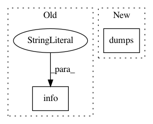

3f1c7db113326ab1bae8d2f6cdd327b3d498ee8e,perfkitbenchmarker/scripts/object_storage_api_tests.py,,SingleStreamThroughputBenchmark,#Any#Any#,225
Before Change
"exiting.")
latency_percentiles = _PercentileCalculator(read_latency)
logging.info("Single stream download throughput in Bps: %s",
LARGE_OBJECT_SIZE_BYTES / float(latency_percentiles["p50"]))
finally:
DeleteObjects(storage_schema, FLAGS.bucket, objects_written,
host_to_connect=host_to_connect)
After Change
LARGE_OBJECT_SIZE_BYTES, _PercentileCalculator(read_latency))
logging.info("Single stream download throughput in Bps: %s",
json.dumps(bandwidth_percentiles, sort_keys=True))
finally:
DeleteObjects(storage_schema, FLAGS.bucket, objects_written,
In pattern: SUPERPATTERN
Frequency: 3
Non-data size: 2
Instances
Project Name: GoogleCloudPlatform/PerfKitBenchmarker
Commit Name: 3f1c7db113326ab1bae8d2f6cdd327b3d498ee8e
Time: 2015-02-05
Author: stfeng@google.com
File Name: perfkitbenchmarker/scripts/object_storage_api_tests.py
Class Name:
Method Name: SingleStreamThroughputBenchmark
Project Name: tensorflow/benchmarks
Commit Name: 42c5df6f644493cf055d0b2e1a756c946d49c38f
Time: 2019-02-06
Author: donglin@google.com
File Name: perfzero/lib/setup.py
Class Name: SetupRunner
Method Name: setup
Project Name: kubeflow/kubeflow
Commit Name: bb8ea10297a7e3b59ca05e10190f0ac566f70756
Time: 2018-01-09
Author: jeremy@lewi.us
File Name: testing/prow_artifacts.py
Class Name:
Method Name: create_finished